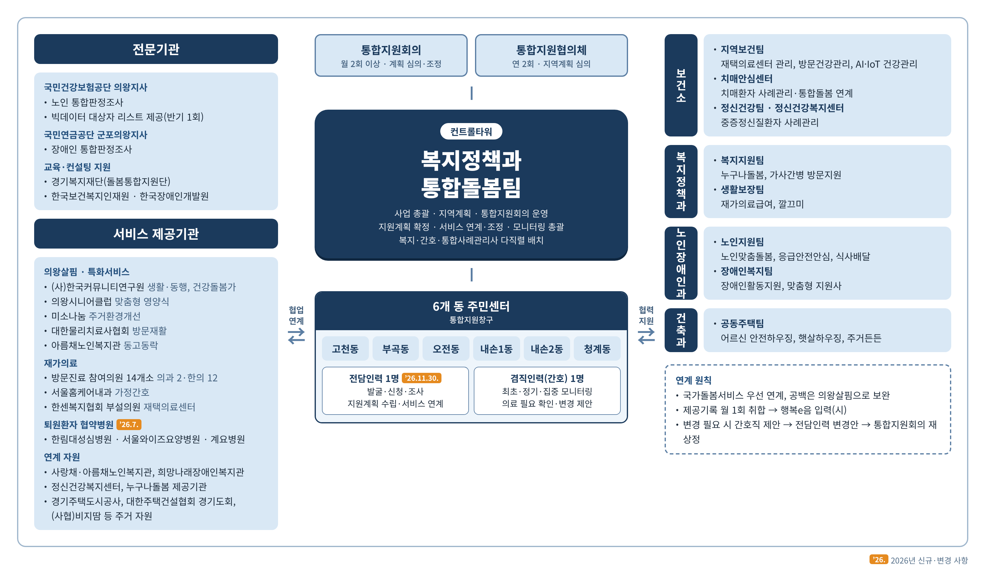
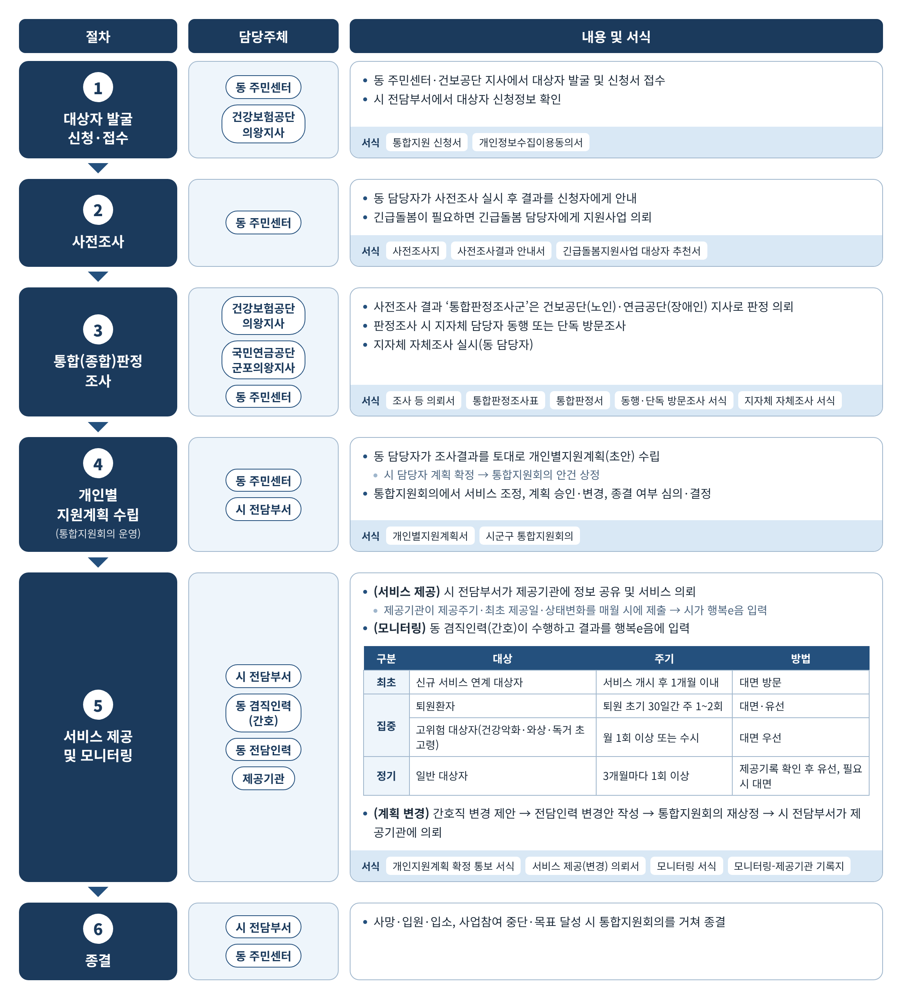
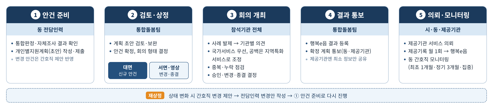
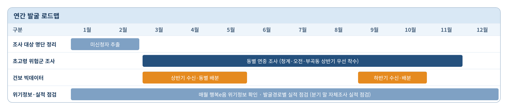
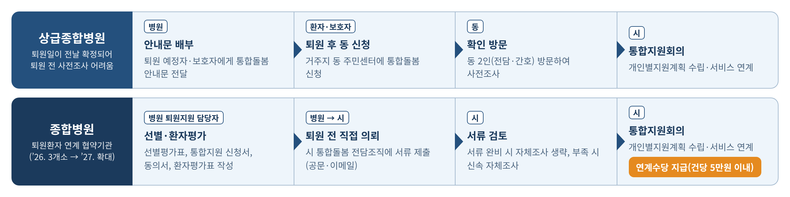
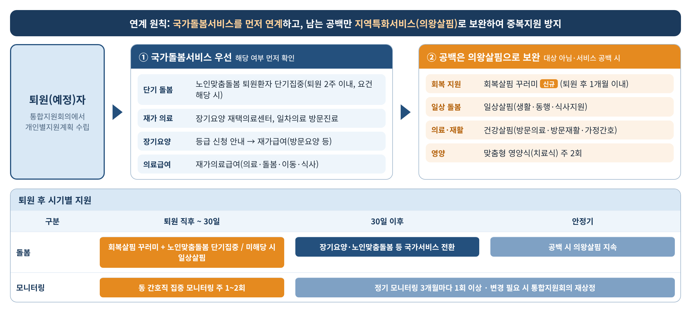

「의료·요양 등 지역 돌봄의 통합지원에 관한 법률」 제6조에 따라 지역 돌봄 수요와 자원을 진단하고 다음 연도 통합지원 추진 방향을 정하는 지역계획을 수립
대상자 발굴과 관리, 서비스 확충과 품질 향상, 전문기관·관련기관 협업, 교육과 홍보, 재원 운용 방안을 포함
2026년 추진 결과 분석과 국민건강보험공단 통합돌봄 실태조사(’25. 12.) 결과를 반영하여 작성
「의왕시 의료·요양 등 지역돌봄의 통합지원에 관한 조례」(’26. 3. 27. 시행)에 따라 통합지원협의체가 지역계획을 심의
초고령사회 진입과 재가 의료 공백에 대응하여, 살던 곳에서 계속 생활할 수 있는 지역 돌봄 체계가 필요
노인인구 33,930명(고령화율 20.3%, ’26. 10.)으로 초고령사회에 진입했고, ’21. 12. 대비 43.5%(10,286명) 증가
실태조사 당시 방문진료·재택의료·방문간호가 관내 무공급이었으며, 본인 신청 중심 접수로 직권·자체발굴이 적음
(기반 마련) 법 시행 전 조례·조직·협의체를 먼저 갖추고 사업 개시
복지정책과 통합돌봄팀 신설(’26. 2.), 통합지원협의체 구성(’26. 2.), 조례 시행(’26. 3. 27.)
(서비스 개시) 지역특화서비스 「의왕살핌」 신설 후 공백 서비스를 추가 도입
의왕살핌 3대 패키지 신설(’26. 4.), 제공기관 공모·협약 후 서비스 개시(’26. 5.)
퇴원환자 연계 협약병원 3개소 확보(’26. 7.), 특화공모사업 3종 개시(’26. 8.)
(현장 의견 반영) 시행 100일 제공기관·관련부서 간담회(’26. 8. 13., 20개소 32명) 개최
(인력 확충) 동별 2인 체계(전담인력 1명, 겸직인력(간호) 1명) 배치(’26. 11. 30.)
(계획 심의) 통합지원협의체 정기회의에서 2027년도 지역계획(안) 심의(’26. 11. 26.)
| 시기 | 내용 |
|---|---|
| ’26. 2. | 통합돌봄팀 신설(복지·간호·통합사례관리사), 통합지원협의체 구성 |
| ’26. 3. | 법 시행, 조례 시행(3. 27.), 6개 동 통합지원창구 운영 |
| ’26. 4.~5. | 「의왕살핌」(일상·건강·내집살핌) 신설, 제공기관 협약, 서비스 개시 |
| ’26. 7.~8. | 퇴원환자 협약병원 3개소, 100일 간담회, 특화공모사업 개시, 운영 매뉴얼 제작 |
| ’26. 9.~10. | 2차 집중홍보, 동별 발굴 목표관리(10월 신청 147명) |
| ’26. 11. | 협의체 지역계획 심의(11. 26.), 동별 2인 체계 배치(11. 30.) |
법 시행 첫해 신청 393명 중 276명을 통합지원 대상자로 결정하고, 1인당 2.7건(총 740건)의 서비스를 연계
유형별로 재가급여자 103명, 등급외자(기각 포함) 52명, 퇴원환자 43명, 고령장애인 22명, 노인맞춤돌봄 중점군 1명, 그 외 55명
연계 분야는 일상돌봄 241건(32.6%), 건강관리·예방 143건(19.3%), 주거 131건, 보건의료 127건, 장기요양 30건, 기타 68건
집중홍보와 동별 목표관리로 10월 신청이 크게 증가
10월 신청 147명(1~9월 월평균 27명), 노인 1만 명당 신청 74.8명(9월) → 119.4명(10월)
동 지역사회보장협의체 160명과 장기요양기관을 대상으로 2차 집중홍보(9~10월), 실적이 낮은 동은 시가 직접 발굴·접수 지원
건보공단 빅데이터 발굴 명단 454명을 동별로 나누어 확인·조사
퇴원환자는 협약병원 공식 의뢰가 0건이어서 병원 안내 후 동 신청 방식으로 전환
상급종합병원은 퇴원일이 전날 확정되어 사전조사 시간이 부족 → 전환 후 퇴원환자 43명 선정
통합지원회의 기준 3·6개월 경과자 정기 점검 기준을 마련하고, 변경이 필요하면 회의에 재상정
공적 서비스가 닿지 않는 공백을 메우는 「의왕살핌」 3대 패키지를 신설(’26. 4., 153,000천원)
소득과 무관하게 신청하고 중위소득 기준으로 자부담을 차등, 협약 제공기관 18개소
의왕살핌 이용 216명: 일상살핌 116명, 건강살핌 51명, 내집살핌 49명
| 구분 | 서비스 | 제공기관 | ’26년 이용 |
|---|---|---|---|
| 일상살핌 | 생활돌봄, 동행돌봄, 식사지원 | (사)한국커뮤니티연구원, 의왕시니어클럽 | 116명 |
| 건강살핌 | 방문의료, 방문재활, 가정간호 | 방문진료 의원 14개소(의과 2·한의 12), 물리치료사협회 경기도회 | 51명 |
| 내집살핌 | 주거환경개선 | 미소나눔 | 49명 |
| 특화공모 (’26. 8.) | 맞춤형 영양식 | 의왕시니어클럽 | 55명 |
| 건강돌봄가 | (사)한국커뮤니티연구원 | 50명 | |
| 동고동락(방문형 치매프로그램) | 아름채노인복지관 | 22명 |
등록만 되어 있던 방문진료 의원 14개소가 실제 진료를 시작하고, 재택의료센터를 확보
방문진료 본인부담금의 80%를 지원하는 구조로 의원 참여를 유도, 건강살핌으로 51명 연계
관내 재택의료센터 1개소(한국한센복지협회 부설의원), 관외(안양) 협약 1개소
국가돌봄서비스를 먼저 연계하고 공백만 지역특화서비스로 보완하는 원칙을 통합지원회의 심의 기준으로 적용
국가돌봄서비스 연계 80명: 장기요양 23, 방문건강관리 18, 치매안심센터 16, 노인맞춤돌봄 14, 정신건강복지센터 9
장기요양 신청과 통합판정을 함께 하는 경우 의뢰 시 표기하여 이중 방문을 줄임
| 구분 | 추진 내용 및 성과 |
|---|---|
| 조례 | 「의왕시 의료·요양 등 지역돌봄의 통합지원에 관한 조례」 제정(’26. 3. 27. 시행) |
| 조직·인력 | 통합돌봄팀 신설(’26. 2., 복지·간호 직렬 함께 배치), 전담인력 배치율 100%(10명), 동 자체 역량강화 교육 6회, 동별 2인 체계 배치(’26. 11. 30.) |
| 통합지원협의체 | 의료·복지·공단·학계·시의회 20명 이내 구성(보건의료위원 4명), 연 2회 개최 |
| 통합지원회의 | 15회 개최, 신규 231건·변경 29건·종결 40건 심의, 보건소 전 회의 참석(100%) 신규는 대면, 변경·종결은 서면으로 나누어 심의 속도를 높임 |
| 기관 협업 | 건보공단 의왕지사(발굴·판정), 국민연금공단 군포의왕지사(장애인 종합판정), 제공기관 간담회 1회 |
(발굴) 본인 신청 위주로 접수되어 직권·자체발굴이 17건(4.3%)에 그치고, 발굴 경로별 실적이 집계되지 않음
노인 1만 명당 신청이 내손2동 207명인 반면, 노인인구가 많은 오전동 88명·청계동 91명으로 동별 편차
(연계 후 관리) 의뢰가 늘면서 서비스 개시 여부 확인이 늦어지는 문제 확인
간담회에서 서비스 시작일·진행상황 미전달, 이메일 의뢰 누락, 돌봄인력 역할 범위 인식 차이가 제기됨
개선: 제공기관 제공기록 월 1회 제출 → 시가 행복e음 입력, 의뢰 접수 확인 회신 의무화, 이용안내문 교부
(서비스) 특화사업이 하반기부터 시작되어 연계 기간이 짧았고, 의왕살핌 집행률은 55.4%(’26. 10.) 수준
| 구분 | 대상 | 규모 | 비율 | 특성 |
|---|---|---|---|---|
| 주요 인구 | 노인 | 30,801명 | 전체 인구의 20.2% | 75세 이상 36.3%(경기 39%), 독거 18.8%, 장기요양 등급자 9.4% |
| 장애인 | 2,641명 | 전체 인구의 1.7% | 65세 미만, 평균 45.4세 | |
| 잠재군 | 노인 | 7,744명 | 노인의 25.1% | 고령장애인·치매환자·퇴원환자 비중이 높음 |
| 장애인 | 1,305명 | 장애인의 49.4% | 평균 38.7세(경기 40.2세) | |
| 핵심군 | 노인 | 1,905명 | 잠재군의 24.6% | 85세 이상 48.6%(경기 42.8%), 입원위험 재가급여자 68.1% |
| 장애인 | 287명 | 잠재군의 22.0% | 독거 15.3%(경기 26.7%) | |
| 현재 통합지원 대상자 | 276명 | 핵심군의 12.6% | 재가급여자 37.3%로 가장 많음 | |
※ 통합돌봄 실태조사(국민건강보험공단, ’25. 12.), 통합지원 대상자는 행복e음 통계(’26. 10.)
(빠른 고령화) 6개 동 중 4개 동의 고령화율이 20%를 넘었고, 청계·오전·부곡동에 노인의 64.2%(21,781명)가 거주
65세 이상 1인세대 6,607세대, 85세 이상 1인세대 1,046세대(’26. 10.)
(초고령 핵심군) 핵심군의 85세 이상 비중이 48.6%로 경기 31개 시군 중 3위
독거·의료급여 비중은 낮아, 기존 저소득·독거 중심 발굴로는 찾기 어려운 고령가구가 많음
(재가 의료 수요) 노인 핵심군의 68%(1,298명)가 요양병원 입원 위험이 높은 재가급여자
지역주민 욕구조사에서 방문의료 필요성이 4.06점(5점 척도)으로 통합돌봄 서비스 중 가장 높음
(병원 → 지역 전환) 퇴원환자 999명 중 사회적 입원자 224명과 재입원 고위험 90명은 지역 돌봄 연계가 우선 필요
(장기요양 밖 공백) 기각·각하자 385명(잠재군의 5.0%, 경기 4.2%) 등 장기요양 밖 돌봄 공백 대상이 도 평균보다 많음
| 동 | 65세 이상(명) | 고령화율 | 기초연금 수급 | 노인 기초생활 수급 | 단독·연립· 다세대 |
|---|---|---|---|---|---|
| 청계동 | 8,263 | 22.0% | 40.5% | 8.3% | 17.9% |
| 오전동 | 7,279 | 22.4% | 55.9% | 3.4% | 9.5% |
| 부곡동 | 6,239 | 21.9% | 70.3% | 12.0% | 32.8% |
| 내손2동 | 4,903 | 15.6% | 36.5% | 2.8% | 6.9% |
| 내손1동 | 4,161 | 21.4% | 42.6% | 7.3% | 5.0% |
| 고천동 | 3,085 | 17.1% | 54.8% | 6.9% | 8.8% |
| 계 | 33,930 | 20.3% | 50.3% | 6.9% | 14.9% |
※ 주민등록 인구현황(’26. 10. 31.), 기초연금·기초생활보장 수급 현황(행복e음, ’26. 10.), 통계청 주택총조사(2025)
방문진료·재택의료·방문간호는 실태조사 당시 무공급이었으나 ’26년에 공급을 시작하여 개선 중
장애인 활동지원·지역사회중심재활, 노인맞춤돌봄은 전국 대비 충족률이 낮고, 응급안전안심은 양호
수요 대비 충족률(%) : ■ 의왕시 ■ 전국 (실태조사, ’25. 12. 기준)
| 영역 | 서비스 | 수요 | 현재 이용·공급 | 충족률(전국) | 판단 |
|---|---|---|---|---|---|
| 보건의료 | 방문진료 | 668명 | 0개소 → ’26년 참여의원 14개소, 51건 | 0%(21.9%) | 부족(개선 중) |
| 재택의료 | 570명 | 0개소 → ’26년 센터 2개소(관내 1·관외 1) | 0%(17.7%) | 부족(개선 중) | |
| 건강관리 | 방문건강관리 | 1,369명 | 988명(담당인력 6명) | 72.2%(75.6%) | 보통 |
| 지역사회중심재활 | 365명 | 44명(담당인력 1명) | 12.1%(33.7%) | 부족 | |
| 장기요양 | 방문요양 | 1,340명 | 1,090명 | 81.3%(96.9%) | 부족 |
| 방문간호 | 172명 | 0명 → ’26년 관내 1개소 | 무공급(25.9%) | 부족(개선 중) | |
| 단기보호 | 362명 | 0명(관내 시설 없음) | 무공급(1.5%) | 부족 | |
| 일상생활 돌봄 | 노인맞춤돌봄 | 143명 | 41명 | 28.7%(38.5%) | 부족 |
| 긴급돌봄 | 63명 | 경기도 누구나돌봄으로 운영(’25년 111명) | - | 도 사업 운영 | |
| 장애인활동지원 | 287명 | 77명 | 26.8%(89.7%) | 부족 | |
| 주거·기타 | 응급안전안심 | 641명 | 716명 | 111.7%(64.0%) | 양호 |
단기보호는 관내 시설이 없어 일상살핌 생활돌봄으로 퇴원·돌봄 공백 초기 단기집중돌봄을 제공하고, 시설 단기보호는 중기 검토 과제로 둠
| 대상군 | 현재 제공·연계 | 미충족·취약 영역 | 우선 고려사항 |
|---|---|---|---|
| 거동불편 재가노인 (570명) | 방문요양 81.3%, 건강살핌 51명 연계 | 공급기관은 확보했으나 이용 저조(수요 668명 대비 51명) | 건강살핌 연계·안내 강화 |
| 퇴원환자 (사회적 입원 224명) | 노인맞춤돌봄 퇴원환자 단기집중, 의왕살핌·영양식·건강돌봄가 | 퇴원 전 의뢰가 작동하지 않음 | 의뢰 경로 이원화 |
| 치매·독거노인 (1,059명) | 치매관리 67.9%, 주야간보호 41.1%, 동고동락 | 노인맞춤돌봄 28.7% | 노인맞춤돌봄 연계, 방문형 치매프로그램 확대 |
| 65세 미만 중증장애인 (287명) | 지역사회중심재활 12.1%, 활동지원 26.8% | 장애인 건강주치의 무공급 | 건강주치의 참여 의원 발굴, 재활 연계 |
| 장기요양 등급외· 예방군(629명) | 방문건강관리 72.2%, 만성질환관리 79.7% | 공적 돌봄 연계 지연 | 건보 빅데이터 발굴, 누구나돌봄 우선 연계 후 공백은 지역특화로 |
| 영역 | 주요 한계 | 주요 원인 | 근거 |
|---|---|---|---|
| 대상자 발굴 및 관리 | 초고령 핵심군 발굴 필요 | 기존 발굴체계가 저소득·독거 위주 | 핵심군 85세 이상 48.6%, 독거 30.9%(경기 39.2%) |
| 퇴원환자 연계 미작동 | 상급종합병원은 퇴원일이 하루 전 확정 | 협약병원 의뢰 0건, 동 경유 43건 | |
| 장기요양 등급외자 연결 지연 | 본인 신청이 없으면 발굴이 어려움 | 등급외·기각 629명 | |
| 서비스 확충 및 품질향상 | 방문의료 이용 저조 | 서비스 인지 부족, 본인부담금 부담 | 수요 668명 대비 51명(7.6%) |
| 외래진료 접근 제약 | 검사·전문진료를 위한 병원 이동이 어려움 | 단독·연립·다세대 부곡 32.8%, 청계 17.9% | |
| 장애인 건강·돌봄 공백 | 관내 의원 참여 유인 약함 | 건강주치의 무공급, 재활 12.1% | |
| 재가 돌봄 공급 부족 | 수요 규모가 작아 민간 참여 유인 약함 | 방문요양 81.3%, 노인맞춤돌봄 28.7% | |
| 운영기반· 민관협력 | 관내 부족서비스의 관외 기관 연계 미흡 | 단독 확충의 효율성 낮음 | 가정간호 등 관외 협력기관 |
| 주민 인지도 낮음 | 홍보·안내 부족 | 노인 돌봄 인지 52.9% → 이용 6.4% |
※ 통합돌봄 실태조사(’25. 12.), 제6기 지역사회보장계획 지역주민욕구조사(’25. 5.~12., 875가구), 통계청 주택총조사(2025)
양호 영역: 응급안전안심 111.7%, 치매관리 67.9%, 주야간보호 41.1%
| 추진 방향 | 핵심 목표 |
|---|---|
| 발굴과 모니터링 강화로 대상자 관리를 촘촘하게 | 대상자 발굴률 ’27년 20% 이상 동 전담·간호 협업 모니터링 체계 구축 |
| 방문진료·재택의료 이용 확대 | 방문진료 참여의원 14개소, 재택의료센터(관내 1·관외 협약 1) 이용 활성화 |
| 병원-지역 간 전환 지원 강화 | 퇴원환자 의뢰 경로 이원화 협약병원 공식 의뢰 ’27년 10명 → ’30년 50명 |
| 의왕살핌 고도화로 재가돌봄 공백 해소 | 지역특화서비스 패키지 보완, 퇴원·급성기 회복지원 확대 |
| 보건소 협업과 장애인 건강관리·재활 연계 | 보건소 통합돌봄 서비스 이용률 ’27년 25% → ’30년 30% ’27년 장애인 건강주치의 관내 1개소 확보 |
| 민관 인력 역량 강화와 통합지원회의 고도화 | 동 전담인력 사례 중심 교육, 통합지원회의 정례화 |
| 구분 | 지역의 핵심 문제 | 우선 대상 | 중점 추진 방향 | 핵심사업 |
|---|---|---|---|---|
| 대상자 발굴 및 관리 | 초고령 핵심군 발굴 미흡 | 85세 이상 독거·노부부(청계·오전·부곡) | 빅데이터 기반 발굴, 직권신청 | 초고령 위험군 발굴 |
| 협약병원 의뢰 0건 | 퇴원환자(재입원 고위험군) | 병원 유형별 의뢰 경로 구분 | 퇴원환자 의뢰 경로 이원화 | |
| 서비스 개시 확인 지연 | 서비스 의뢰가 끝난 대상자 전체 | 개시 확인·정기 점검 전담 | 동 전담·간호 협업 모니터링 | |
| 서비스 확충 및 품질향상 | 방문의료 이용 저조 | 와상·거동불편 노인, 퇴원환자 | 방문의료 대상자 집중 발굴·연계 | 의왕살핌 서비스 고도화 |
| 외래진료 접근 제약 | 승강기 없는 주택의 거동불편자 | 검사·전문진료 병원 이동 지원 | 돌봄공백 신규서비스(이동살핌) | |
| 퇴원 직후·독거노인 돌봄 공백 | 퇴원·급성기 환자, 독거노인 | 퇴원 초기 단기돌봄, AI 안부확인 | 돌봄공백 신규서비스(회복살핌·AI 돌봄로봇) | |
| 장애인 건강주치의 무공급 | 65세 미만 중증장애인 | 참여 의원 발굴 | 장애인 건강주치의 의원 발굴 | |
| 운영기반· 민관협력 | 복합욕구 대상자의 분절적 지원 | 복합욕구 핵심군 | 사람 중심 사례관리 강화 | 의뢰·회신 표준체계, 통합지원회의·사례관리 고도화, 관외 협력기관 연계 |
| 교육 및 홍보 | 주민·제공기관 인지도 낮음 | 주민, 제공기관 | 현장 역량·인지도 제고 | 의왕돌봄마당, 찾아가는 설명회, 생활 밀착 홍보 |
초고령 위험군 발굴확대
퇴원환자 의뢰 경로 이원화개선
동 전담·간호 협업
모니터링 체계 구축신규
의왕살핌 서비스 고도화확대
돌봄공백 신규서비스 도입신규
장애인 건강주치의
참여 의원 발굴신규
서비스 의뢰·회신
표준체계 구축신규
관외 협력기관 연계 확대신규
통합지원회의·사례관리
고도화개선
「의왕돌봄마당」
민관 역량강화확대
찾아가는 통합돌봄 설명회신규
주민 생활 밀착 홍보신규
2027년 목표 대상자는 541명(우선발굴필요군 421명, 기타 120명)
우선발굴필요군 6,506명 = 건보공단 산출 6,208명(유형 간 중복 제거) + 65세 미만 중증장애인 298명(행복e음)
복지정책과 통합돌봄팀이 컨트롤타워를 맡고, 6개 동 주민센터가 통합지원창구로 발굴부터 모니터링까지 수행
통합돌봄 인력 16명(전담 10명, 겸직 6명), 전담인력 실제 배치율 100%, 본청 2개 직렬(복지·간호)
동별 2인 체계: 전담인력 1명(발굴·조사·지원계획·연계), 겸직인력(간호) 1명(모니터링)

서비스 제공 절차는 신청·접수 → 사전조사 → 통합판정조사 → 개인별 지원계획 수립(통합지원회의) → 서비스 제공·모니터링 → 종결의 6단계

(통합지원협의체) 시장을 위원장으로 20명 이내로 구성하고 연 2회(상·하반기) 정례 개최
지역계획 수립·평가, 통합지원 시책, 기관 간 연계·협력에 관한 사항을 심의·자문
공공·민간, 복지·보건의료 등 4개 분야 이상 참여, 위촉직 임기 2년
(통합지원회의) 월 2회 이상 개최하여 개인별 지원계획을 심의·확정
동·보건소·건보공단·연금공단·제공기관이 참여, 신규 안건은 대면·변경과 종결은 서면 또는 영상
외부 참석자는 보안서약서를 작성하고, 제공기관에는 필요한 최소 정보만 공유

| 지표 | 정의(산식) | ’27년 목표 | 근거 |
|---|---|---|---|
| 통합돌봄 대상자 발굴률 | 직권·자체발굴 대상자 ÷ 신청자 × 100 | 20% 이상 | 정부합동평가 |
| 우선발굴필요군 중 통합지원 대상자 | 우선발굴필요군(6,506명) 중 대상자로 결정된 인원 | 421명 이상(6%) | 수립 안내서 |
| 통합지원 대상자 중 우선발굴필요군 비중 | 우선발굴필요군 대상자 ÷ 전체 대상자 × 100 | 70% 이상 | 수립 안내서 |
| 개인별 지원계획 수립률 | 지원계획 수립자 ÷ 우선발굴필요군 × 100 | 6% 이상 | 지역복지사업 평가 |
| 모니터링 수행률 | 3개월 단위 모니터링 수행 대상자 ÷ 전체 대상자 × 100 | 80% 이상 | 수립 안내서 |
| 전담인력 실제 배치율 | 실제 배치 전담인력 ÷ 기준인건비 인원 × 100 | 100% | 정부합동평가 |
| 본청 다직렬 인력 배치 | 본청 전담부서에 배치된 직렬 수 | 2개 직렬 이상 | 지역복지사업 평가 |
| 보건소 통합지원회의 참석률 | 보건소 참여 회의 ÷ 연간 회의 × 100 | 90% 이상 | 정부합동평가 |
| 보건소 통합돌봄 서비스 이용률 | 보건소로 의뢰되어 2가지 이상 연계·제공한 건수 ÷ 연계·제공 건수 × 100 | 25% 이상 | 정부합동평가 |
※ 행정안전부 「2028년(’27년 실적) 지방자치단체 합동평가 지표매뉴얼」(’26. 10. 20.), 보건복지부 「2026년 지역복지사업 평가계획」 준용
| 구분 | 지표 | ’27년 목표 |
|---|---|---|
| 모니터링 | 모니터링 후 계획 변경·종결 비중 | 90% 이상 |
| 인력양성 | 통합돌봄 인력 교육 이수 인원 | 16명 전원 |
| 민관 관계자 자체교육 운영 횟수 | 연 6회 | |
| 정책 홍보 | 찾아가는 통합돌봄 설명회 개최 횟수 | 연 6회 |
| 홍보자료 배포 건수 | 연 1,000건 | |
| 주민 소통 | 지역특화서비스 종결 시 만족도 조사 인원 | 연 300명 |
| 주민 의견 반영 건수 | 연 1건 | |
| 사업 운영 | 통합지원협의체 구성 적절성 | 4개 분야 이상 참여 |
| 통합지원회의 운영 적절성(회의 심의로 계획을 확정한 신규 대상자) | 100% | |
| 통합지원회의 개최 횟수 | 월 2회 이상 |
| 연번 | 대상자 유형 | 우선발굴필요군 규모 | ’27년 목표 대상자 |
|---|---|---|---|
| 1 | 장기요양 재가급여자 | 2,151 | 145 |
| 2 | 등급외자(A, B) 및 노인맞춤돌봄 중점관리군 | 235 | 50 |
| 3 | 의료기관 퇴원환자 | 840 | 60 |
| 4 | 장기요양 기각·각하자 | 361 | 40 |
| 5 | 장기요양시설 퇴소자 | 12 | 2 |
| 6 | 고령장애인 | 2,871 | 107 |
| 7 | 65세 미만 뇌병변·지체 등 중증장애인 | 298 | 17 |
| 우선발굴필요군 소계 | 6,506 | 421 | |
| 기타(우선발굴필요군 외 돌봄 필요 대상) | - | 120 | |
| 합계 | - | 541 | |
※ 1~6번은 건보공단 우선관리대상자 산출 자료(’25. 12. 말), 소계는 유형 간 중복을 제거한 인원으로 유형별 단순 합과 다름. 7번은 행복e음 장애인 통계(’26. 10.)
(초고령 위험군 조사) 85세 이상 1인세대(1,046세대) 중 통합돌봄 미신청자를 연중 방문 조사
청계·오전·부곡동을 상반기에 우선 착수하고, 3~11월에 동별로 나누어 조사, 분기별 실적 점검
동 전담인력과 겸직인력(간호) 2인이 가정을 방문하여 건강·돌봄 욕구를 확인하고 필요하면 직권신청
부곡동: 노인 기초생활 수급 12.0%, 기초연금 수급 70.3%로 시 최고 / 오전동: 기초생활 3.4%, 기초연금 55.9%로 제도 밖 경계층 다수 / 청계동: 노인 8,263명으로 최다
(공공데이터 기반 발굴) 건보공단 빅데이터 리스트를 반기 1회 받아 동별로 배분하고 동 전담인력이 상담·직권신청
입원위험 재가급여자, 등급외·기각자 대상, 행복e음 복지사각지대 위기정보는 매월 확인
(발굴 실적 관리) 신청 시 발굴 경로(본인신청·직권·빅데이터·주민의뢰·퇴원 등)를 기록하고 동별 발굴률을 월별로 관리

(관계기관 협업) 관계기관이 업무 중 발견한 돌봄 대상자를 동 주민센터에 의뢰하면 동 전담인력이 확인 후 직권신청
| 기관 | 발굴 협업 내용 |
|---|---|
| 국민건강보험공단 의왕지사 | 입원위험 재가급여자, 등급외·기각자 빅데이터 리스트 제공(반기 1회) |
| 보건소·치매안심센터·정신건강복지센터 | 방문건강관리·치매관리·정신건강 대상자 중 복합 돌봄 필요자 의뢰 |
| 재가장기요양기관·요양시설 | 복합 돌봄 욕구 이용자, 퇴소 후 지역 돌봄이 필요한 대상자 의뢰 |
| 노인·장애인복지관, 노인맞춤돌봄 수행기관 | 건강 악화·돌봄 공백 대상자, 의료·돌봄 연계가 필요한 중증장애인 의뢰 |
| 지역사회보장협의체·통장협의회 | 복지사각지대·사회적 고립 가구, 돌봄 필요 주민 발굴·연계 |
| 지역 의료기관 | 진료 과정에서 복합 돌봄 욕구가 확인된 대상자 발굴·연계 |
병원 유형에 따라 의뢰 경로를 둘로 나누어 퇴원환자가 빠짐없이 연계되도록 함
(상급종합병원) 퇴원 예정자에게 통합돌봄 안내문 교부 → 퇴원 후 동 주민센터 신청 → 동 확인 방문
(종합병원) 협약병원 퇴원지원 담당자가 선별·환자평가 후 시 전담조직에 직접 의뢰 → 서류가 완비되면 자체조사 생략
(연계수당) 공식 의뢰 실적에 따라 건당 5만원 이내 지급, ’27년 목표 10건


동 겸직인력(간호)이 모니터링을 전담하고, 결과는 행복e음에 기록
(총괄) 통합돌봄팀이 동별 수행 실적을 월 1회 관리하고, 제공기관 제공기록을 월 1회 취합하여 행복e음에 입력
(제공기관) 대상자별 제공 주기, 최초 제공일, 상태 변화를 시에 제출하고 추가 욕구는 동에 수시 공유
| 구분 | 대상 | 주기 | 방법 |
|---|---|---|---|
| 최초 | 신규 서비스 연계 대상자 | 서비스 개시 후 1개월 이내 | 대면 방문 |
| 집중 | 퇴원환자 | 퇴원 초기 30일간 주 1~2회 | 대면·유선 |
| 고위험 대상자(건강 악화, 와상, 독거 초고령 등) | 월 1회 이상 또는 수시 | 대면 우선 | |
| 정기 | 일반 대상자 | 3개월마다 1회 이상 | 제공기록 확인 후 유선, 필요 시 대면 |
서비스 변경이 필요하면 통합지원회의에 재상정하여 계획을 변경
간호직 변경 제안 → 전담인력 변경(안) 작성 → 통합지원회의 재상정 → 시 전담조직이 제공기관에 의뢰
의료 필요가 큰 대상자(건강살핌 대상자, 퇴원환자)는 간호직이 조사에 동행하고 계획 초안에 의견 제시
동 내 월 1회 사례 공유, 통합돌봄팀이 동별 수행률을 매월 점검하고 분기별 동 담당자 회의에서 사례 공유
(방문의료 이용 활성화) 방문진료 참여의원 14개소를 활용하여 입원위험 재가급여자·퇴원환자를 집중 발굴·연계
참여 의원과 재택의료센터를 더 늘리기보다, 동 간호직의 의료 필요 확인을 통해 건강살핌 연계를 확대
(의왕살핌 고도화) 일상·건강·내집살핌 이용자를 전년 대비 30% 확대
일상살핌 식사지원은 일반식을 기존 식사 서비스로 연계하고, 퇴원·급성기 등 치료식이 필요한 대상의 맞춤형 영양식으로 개편
(장애인 건강) 장애인 건강주치의 참여 의원 1개소 이상 발굴, 보건소 지역사회중심재활과 연계
| 서비스 | 우선 대상 | 내용 | ’27년 목표 | 예산(천원) |
|---|---|---|---|---|
| 이동살핌 | 승강기 없는 주택에 사는 거동불편자 | 검사·전문진료를 위한 병원 이동 지원 | 34명 | 20,000 |
| 회복살핌 패키지 | 퇴원 후 1개월 이내 대상자 등 | 건강관리용품 꾸러미 지원, 노인맞춤돌봄 퇴원환자 단기집중과 함께 제공 | 100명 | 10,000 |
| AI 돌봄로봇 | 독거·안전확인 필요 대상 | AI 로봇을 통한 안부 확인 | 100명 | 80,000 |
신규 서비스는 세부 운영 기준을 마련하는 단계로, 제공기관 선정 후 시행
| 서비스 | 우선 대상 | ’27년 목표 | 추진 방식 |
|---|---|---|---|
| 일상살핌(생활·동행) | 기존 공적서비스 미수혜자 | 이용자 30% 확대(125명) | 신체·가사활동, 병원 동행 |
| 맞춤형 영양식(개편) | 만성질환자, 저영양 위험자 | 이용자 30% 확대 | 치료식 배달, 안부 확인 |
| 건강살핌 | 거동불편 건강취약자 | 이용자 30% 확대(110명) | 방문의료·재활·가정간호 |
| 내집살핌 | 기존 공적서비스 미수혜자 | 이용자 30% 확대(95명) | 주거환경개선 |
| 동고동락 | 치매환자·인지저하자 | 이용자 30% 확대 | 방문형 치매프로그램 |
| 건강돌봄가 | 건강 모니터링이 필요한 자 | 이용자 30% 확대 | 방문 건강 모니터링 |
| 퇴원환자 연계 | 퇴원환자 | 10명 | 협약병원 의뢰, 연계수당 |
국가돌봄서비스와 도·시 사업은 전년 대비 이용자 5~10% 확대를 목표로 연계
재택의료센터, 일차의료 방문진료, 다제약물관리, 방문건강관리, 치매관리, 노인맞춤돌봄, 장애인활동지원, 누구나돌봄, 주거환경개선 사업 등
(제공기관 선정·관리) 표준심사표(5개 영역 100점)와 적격 요건으로 공모·심사하고, 신규 서비스에도 같은 기준 적용
선정 후 배상책임보험 가입, 보안·사고예방 서약서 제출을 확인하고 교육·회의·모니터링 참여 의무를 협약에 명시
(표준 가이드라인) 운영 매뉴얼, 서비스 메뉴판, 표준서식(의뢰서·계약서·조정신청서·결과보고서)을 개정·배포
’26년 간담회 개선사항을 표준 절차로 정착: 의뢰 접수 확인 회신, 이용안내문 교부와 서면 확인, 지원 불가사항 사전 안내
(만족도 조사) 서비스 종결 시 시간 준수·전문성·만족도·재이용 의향을 5점 척도로 조사하고, 연 1회 간담회에서 결과 공유
(운영 점검) 제공기관이 제출한 제공기록을 시가 월 1회 행복e음에 입력하고, 동 담당자가 진행상황을 직접 확인
민원·제공 지연·누락 발생 시 수시 점검 및 개선 조치
| 기관 | 협업 내용 |
|---|---|
| 국민건강보험공단 의왕지사 (돌봄통합TF팀) | (발굴) 빅데이터 대상자 리스트 반기 1회 제공 → 시가 동별 배분 (조사) 장기요양 조사와 통합판정 조사를 한 번의 방문으로 시행(’26. 8. 간담회 합의) (계획) 통합지원회의에 참석하여 개인별 지원계획 수립 협의 |
| 국민연금공단 군포의왕지사 (장애인지원센터) | (조사) 65세 미만 장애인 종합판정조사 시행·회신 (계획) 통합지원회의에 참석하여 장애인 서비스 연계 협의 |
| 경기복지재단 (돌봄통합지원단) | (교육) 신규 동 전담인력 기초교육, 시군 맞춤형 교육 공동 구성 (컨설팅) 시군 통합돌봄 컨설팅, 지역계획 수립 컨설팅 |
| 한국장애인개발원 (통합돌봄지원팀) | (교육) 장애인 통합돌봄 담당자 교육 (기술지원) 지원계획 수립이 어려운 복합 사례 자문 (자료) 서비스·기관 목록과 홍보물 활용 |
| 한국보건복지인재원 | (교육) 동 전담·겸직인력 기본과정, 본청 심화과정, 팀장·리더과정 (지역계획) 지역계획 작성 교육 |
통합지원 관련기관은 공공과 민간, 보건의료·건강관리·복지·주거 분야로 구성
(공공) 건보공단, 국민연금공단, 보건소(방문건강관리), 치매안심센터
(보건의료) 방문진료 의원 14개소(의과 2·한의 12), 재택의료센터, 가정간호 의원, 지역책임의료기관(한림대학교성심병원), 퇴원환자 협약병원 3개소
(복지·주거) (사)한국커뮤니티연구원, 의왕시니어클럽, 미소나눔, 아름채·사랑채노인복지관, 희망나래장애인복지관, 정신건강복지센터
운영기반 핵심사업으로 의뢰·회신 표준체계를 구축하고 관외 협력기관 연계를 확대
(의뢰·회신 표준체계) 서비스마다 다른 의뢰 양식을 통일하고, 제공기관의 접수 확인 회신과 제공기록 월 1회 제출을 표준 절차로 운영
(관외 협력기관 연계) 가정간호·재택의료 등 관내 공급이 적은 서비스는 관외 협약기관과 연계
(통합지원회의·사례관리 고도화) 국가돌봄서비스 우선, 공백은 지역특화서비스로 보완하고 중복 서비스를 조정
(추진 방향) 동별 2인 체계로 새로 배치된 동 인력 12명이 신청부터 모니터링까지 전 과정을 조기에 익히도록 직무교육을 집중 실시
제공기관과 동 담당자가 같은 절차와 기준으로 일하도록 민관 공동교육 실시
(목표) 통합돌봄 인력 16명(전담 10, 겸직 6) 전원이 중앙·전문기관 교육 1과정 이상 이수
민관 자체교육 연 6회 운영(「의왕돌봄마당」 5회, 경기복지재단 시군 맞춤형 교육 1회)
동 담당자용 업무 매뉴얼 개정·배포 1회
| 구분 | 과정 | 대상 | 시기 | 기관 |
|---|---|---|---|---|
| 중앙· 전문기관 | 담당자 기본과정 | 신규 배치자 | 연간 | 한국보건복지인재원, 경기복지재단 |
| 담당자 심화과정 | 본청 전담 4명 | 연간 | ||
| 팀장·리더과정 | 동 팀장 6명, 관리자 | 연간 | ||
| 장애인 통합돌봄 교육 | 동 12명 | 개설 시 | 한국장애인개발원 | |
| 자체 「의왕 돌봄마당」 | ① 신규 동 인력 직무교육 | 동 6명 | ’27. 1. | 시 통합돌봄팀 |
| ② 의왕살핌 매뉴얼 개정 교육 | 동 12명 | ’27. 1. | ||
| ③ 동 전담·간호 협업 모니터링 교육 | 동 12명 | ’27. 1. | ||
| ④ 제공기관 운영 교육(매뉴얼·서식·의뢰절차) | 제공기관 담당자 | 연 1회 | ||
| ⑤ 신규·개편 지역특화사업 교육 | 동 12명 | 상반기 | ||
| ⑥ 시군 맞춤형 교육 | 민관 50명 이상 | 하반기 | 경기복지재단 공동 구성 |
(홍보 매체 다각화) 신청 방법과 받을 수 있는 서비스를 구체적으로 안내하여 실제 신청·이용으로 이어지도록 홍보
서비스 메뉴판·리플릿 연중 배포, 보도자료·카드뉴스, 시 홈페이지·SNS 게시
고령층·장애인은 동 창구와 경로당 등 대면 채널, 보호자(가족)는 온라인 채널 중심으로 안내
(생활 밀착 홍보) 경로당·약국·의원·장기요양기관·동 주민센터 등 주민이 자주 찾는 곳에 홍보물 비치
퇴원 예정자에게 병원을 통해 통합돌봄 안내문 배부(퇴원환자 의뢰 경로 이원화와 연계)
(찾아가는 통합돌봄 설명회) 통장협의회·동 지역사회보장협의체·경로당 등 주민 정례 회의를 찾아가 설명과 질의응답 실시
동별 연 1회 이상(총 6회), 주민이 의뢰한 돌봄 필요 대상은 동에서 확인 후 직권신청으로 연계
(이용자 의견 수렴) 지역특화서비스 종결 시 이용자(보호자) 만족도와 불편사항을 전화·방문으로 조사(연 300명)
만족도 조사와 설명회 건의사항을 기록·관리하고, 개선이 필요한 사항은 사업 운영에 반영(연 1건 이상)
(국가서비스 우선) 장기요양·노인맞춤돌봄 등 국가돌봄서비스를 먼저 연계하고, 통합돌봄 예산은 공백 영역에만 투입하여 중복 지원을 방지
(형평성) 지역특화서비스의 단가와 부담은 기존 제도 기준을 준용하고 소득 수준별로 차등 적용
(집행 원칙) 통합돌봄 대상자에 한해 지원하며, 현금성 급여와 국가서비스 본인부담금 전액 지원은 배제
| 구분 | 사업 | 예산액 | 비고 |
|---|---|---|---|
| 사업비 | 의왕살핌(일상·건강·내집살핌) | 514,136 | 일상 125명, 내집 95명, 건강 110명 |
| 이동살핌신규 | 20,000 | 왕복 143천원 × 4회 × 34명 | |
| 회복살핌 패키지신규 | 10,000 | 100명 | |
| AI 돌봄로봇신규 | 80,000 | 100명 | |
| 퇴원환자 연계수당 | 500 | 50천원 × 10건 | |
| 재택의료센터 운영지원 | 5,000 | 1개소 | |
| 의왕형 통합돌봄(보조금사업) | 60,000 | 공모 | |
| 사업비 계 | 689,636 | 국비 344,818 / 도비 34,482 / 시비 310,336 | |
| 운영비 | 회의수당, 홍보물 제작, 행사 운영 | 17,000 | 3,000 / 11,000 / 3,000 |
| 총계 | 706,636 | 국비 353,318 / 도비 35,332 / 시비 317,986 | |
예산은 시의회 심의 결과에 따라 변동될 수 있음
| 시기 | 내용 |
|---|---|
| ’26. 11. 26. | 통합지원협의체 정기회의, 2027년도 지역계획(안) 심의 |
| ’26. 11. 30. | 동별 2인 체계(전담인력·겸직인력) 배치 |
| ’26. 12. | 위원 의견 반영, 지역계획 확정·제출 |
| ’27. 1. | 신규 동 인력 직무교육, 의왕살핌 매뉴얼 개정, 모니터링 체계 시행 |
| ’27. 1.~2. | 제공기관 공모·협약, 신규 서비스 운영 기준 마련 |
| ’27. 3.~11. | 초고령 위험군 조사(청계·오전·부곡동 우선), 찾아가는 통합돌봄 설명회 |
| ’27. 상·하반기 | 통합지원협의체 개최, 건보공단 빅데이터 리스트 동별 배분 |
2027년도 통합지원 지역계획(안)의 목표와 핵심사업의 적정성
대상자 발굴, 퇴원환자 연계, 서비스 제공에 대한 기관별 협력 방안